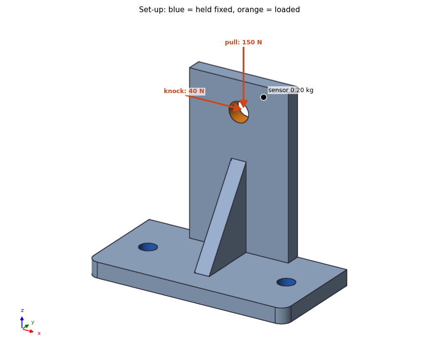
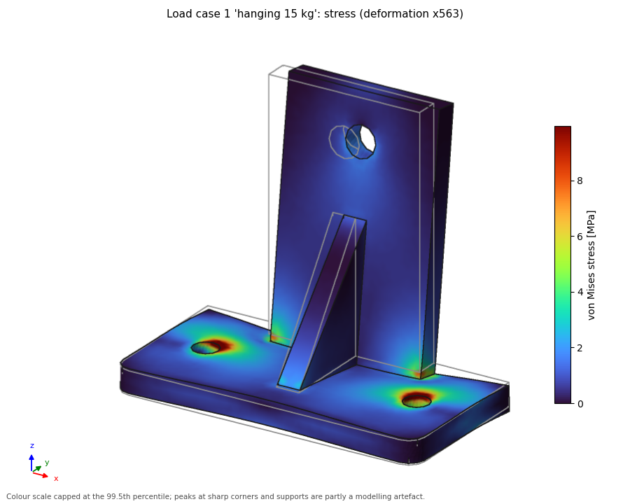
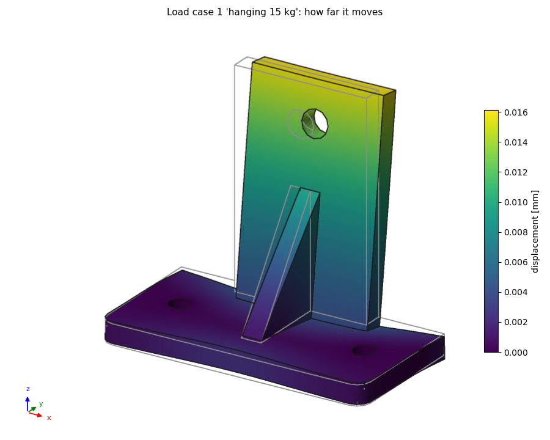
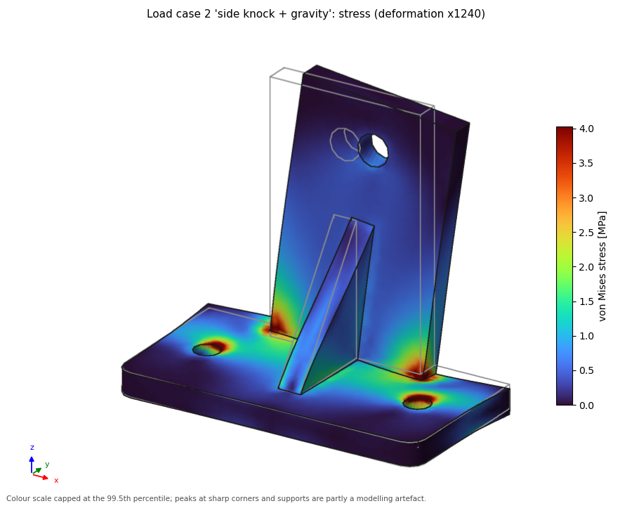
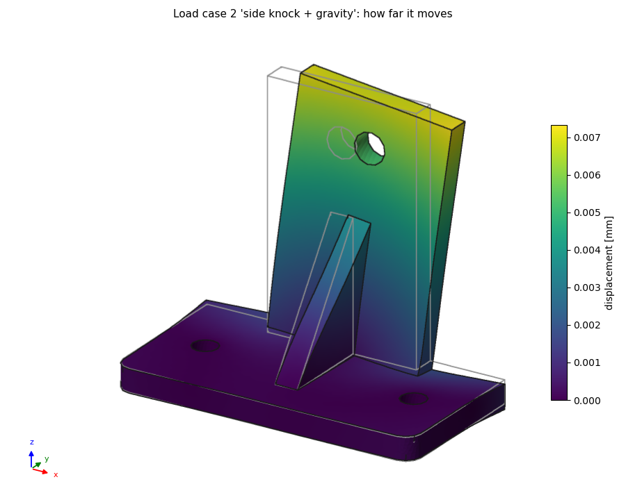
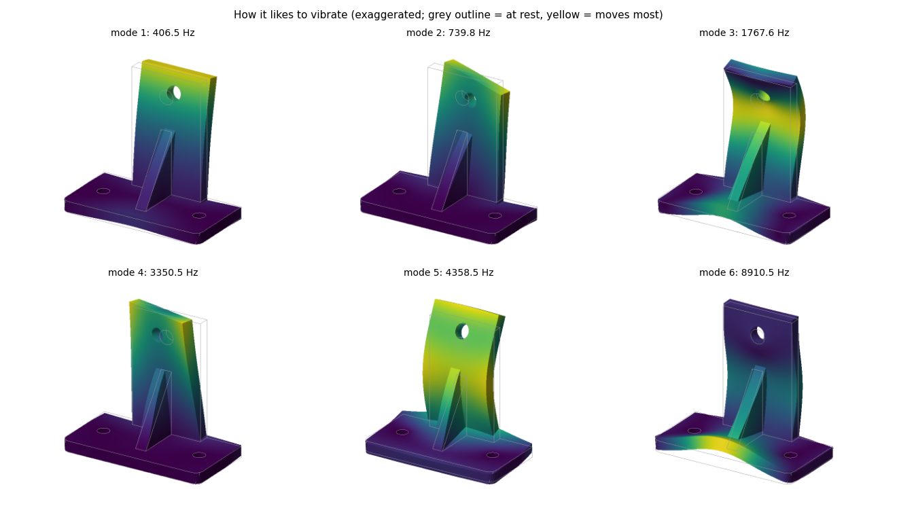
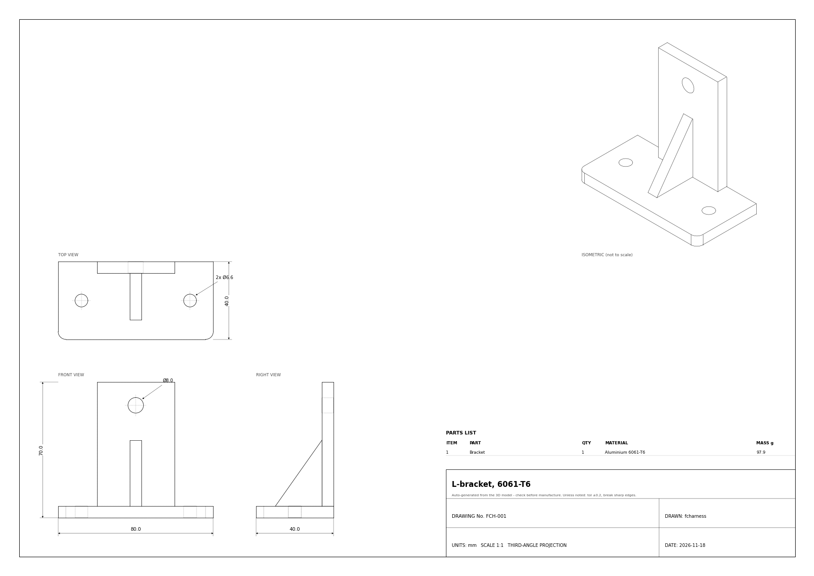

This report was generated automatically by fcharness from `bracket.step`. It is a first engineering look meant to help you decide - not a certification. Every number comes from a computer model with the assumptions listed at the end.

| part | subassembly | material | mass (g) | size x×y×z (mm) |
|---|---|---|---|---|
| Bracket | - | Aluminium 6061-T6 | 97.9 | 80×40×70 |
| sensor | (point mass) | - | 200.0 | - |
Total mass 297.9 g, centre of gravity at (40.0, 42.6, 45.0) mm.

| part | highest stress (MPa) | peak incl. support edges | material can take (MPa) | safety factor | hot-spot at (mm) |
|---|---|---|---|---|---|
| Bracket | 8.0 | 17.7 | 276 | 34.49 | (60, 34, 7) |

Check: the supports push back with (0.0, 0.0, 150.0) N, balancing the applied (0.0, 0.0, -150.0) N (error 0.00%). Per support: bolt holes (0.0, 0.0, 150.0) N.

| part | highest stress (MPa) | peak incl. support edges | material can take (MPa) | safety factor | hot-spot at (mm) |
|---|---|---|---|---|---|
| Bracket | 7.2 | 7.2 | 276 | 38.42 | (59, 34, 7) |

Check: the supports push back with (-40.0, 0.0, 2.9) N, balancing the applied (40.0, 0.0, -2.9) N (error 0.00%). Per support: bolt holes (-40.0, 0.0, 2.9) N.

| mode | frequency (Hz) | main motion | which part flexes (strain energy) |
|---|---|---|---|
| 1 | 406.5 | front-to-back (y) | - |
| 2 | 739.8 | side-to-side (x) | - |
| 3 | 1767.6 | up-and-down (z) | - |
| 4 | 3350.5 | side-to-side (x) | - |
| 5 | 4358.5 | up-and-down (z) | - |
| 6 | 8910.5 | up-and-down (z) | - |
What to change: to raise a frequency, make the part stiffer in the direction it moves in that mode (ribs, thicker walls, shorter overhangs) or make the carried mass lighter / closer to the supports.

drawing.pdf · drawing.svg · the saved `model_with_analysis.FCStd` also contains an editable TechDraw page.
Run `FCH_JOB=examples/bracket/job.yaml fc run.py` from the repository. Every step's inputs/outputs are in `checkpoints/`; solver decks and logs in `work/`.
# Example job: an aluminium L-bracket bolted down with two M6 bolts, carrying a 0.2 kg sensor on a
# pin through the d8 hole. Read top to bottom - every line is plain geometry, no face numbers.
name: bracket
model: bracket.step
default_material: al_6061_t6
supports:
- name: bolt holes
type: fixed
where: {cylinders: {diameter: 6.6}} # both M6 clearance holes
point_masses:
- name: sensor
mass_kg: 0.2
at: [40, 50, 58] # its centre of gravity, 10 mm behind the upright
attach: {cylinders: {diameter: 8}} # hangs on a pin in the d8 hole
load_cases:
- name: hanging 15 kg
forces:
- name: pull
where: {cylinders: {diameter: 8}}
force_N: [0, 0, -150]
- name: side knock + gravity
gravity_g: [0, 0, -1]
forces:
- name: knock
where: {cylinders: {diameter: 8}}
force_N: [40, 0, 0]
analyses: [static, modal]
modal: {modes: 6, avoid_hz: [50, 120]} # e.g. a motor running 3000-7200 rpm nearby
mesh: {size_mm: 3.0}
checks: {safety_factor_target: 2.0, safety_factor_min: 1.5}
drawing: {projection: third_angle, title: "L-bracket, 6061-T6"}